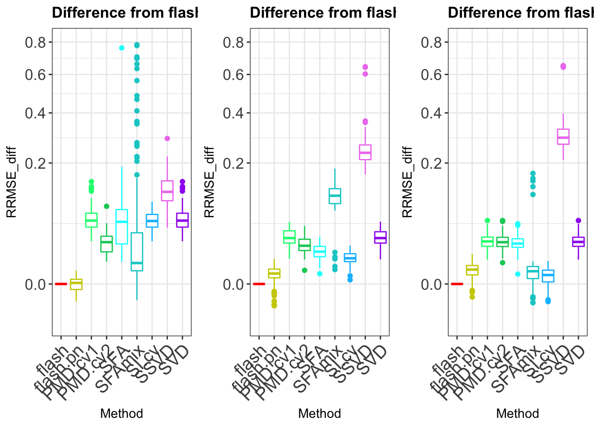

Warning in as.POSIXlt.POSIXct(Sys.time()): unknown timezone 'default/
America/Chicago'Last updated: 2018-01-25
Code version: bb240a9
mkdir rankone# this file is for all the R function we need here for sparse factor model
library("MASS")Warning: package 'MASS' was built under R version 3.3.2betaO=function(P,betapi,betasigma,propt){
idx=rmultinom(P,size=1,prob=betapi)
K=length(betapi)
s=array(0,dim=c(K,K))
diag(s)=betasigma
bnorm=mvrnorm(P,rep(0,K),s)
betaO=apply(bnorm*t(idx),1,sum)
betaO=betaO*rbinom(P,1,propt)
return(betaO)
}
datamaker = function(N,P,l_pi,l_se,l_sp,f_pi,f_se,f_sp,sigmae){
# here I would like to fix the sparsity of L and F which is simple
# if we need to do futher experiment
L_true = betaO(N,l_pi,l_se,l_sp)
F_true = betaO(P,f_pi,f_se,f_sp)
E = matrix(rnorm(N*P,0,sigmae),ncol = P)
Y = L_true %*% t(F_true) + E
return(list(Y = Y, L_true = L_true, F_true = F_true, E = E))
}
CVPMD=function(Y,c_u,c_v){
N = dim(Y)[1]
P = dim(Y)[2]
colindex = matrix(sample(P,P),ncol = 5)
rowindex = matrix(sample(N,N),ncol = 5)
missing= array(0,dim = c(5,N,P))
foldindex = array(0,dim = c(5,5,2))
for(i in 1:5){
for(j in 1:5){
foldindex[i,j,1] = i
foldindex[i,j,2] = (i+j) %% 5
}
}
foldindex[which(foldindex == 0)] = 5
for(i in 1:5){
missing[i, , ] = Y
for(j in 1:5){
missing[i,rowindex[,foldindex[j,i,1]],colindex[,foldindex[j,i,2]]] = NA
}
}
n_u = length(c_u)
n_v = length(c_v)
CVRMSE = array(0,dim = c(n_u,n_v))
minrmse = Inf
opt_u = 0
opt_v = 0
for(t_u in 1:n_u){
for(t_v in 1:n_v){
rmse = rep(0,5)
for(i in 1:5){
out = PMD(missing[i,,], sumabsu = c_u[t_u], sumabsv = c_v[t_v],center=FALSE)
misshat = out$d * out$u %*% t(out$v)
for(j in 1:5){
rmse[i] = rmse[i] + sum((Y[rowindex[,foldindex[j,i,1]],colindex[,foldindex[j,i,2]]] -
misshat[rowindex[,foldindex[j,i,1]],colindex[,foldindex[j,i,2]]])^2)
}
rmse[i] = sqrt(rmse[i] / (N * P/5))
}
CVRMSE[t_u,t_v] = mean(rmse)
if(CVRMSE[t_u,t_v] < minrmse){
minrmse = CVRMSE[t_u,t_v]
opt_u = c_u[t_u]
opt_v = c_v[t_v]
}
}
}
return(list(opt_u = opt_u,opt_v = opt_v))
}
# input is a list of Y L_true and F_true which is called Y_data
PMA.wrapper = function(Y_data,ngrids = 10){
library(PMA)
Y = Y_data$Y
L_true = Y_data$L_true
F_true = Y_data$F_true
E = Y_data$E
N = dim(Y)[1]
P = dim(Y)[2]
c_u = seq(1,sqrt(N),length.out = ngrids)
c_v = seq(1,sqrt(P),length.out = ngrids)
cvout = CVPMD(Y,c_u,c_v)
out = PMD(Y,sumabsu = cvout$opt_u, sumabsv = cvout$opt_v,center=FALSE )
Y_hat = out$d * out$u %*% t(out$v)
RMSE = sqrt(mean(( Y - Y_hat - E )^2 ))/sqrt(mean(( Y - E )^2 ))
return(RMSE)
}
PMA_d.wrapper = function(Y_data){
library(PMA)
Y = Y_data$Y
L_true = Y_data$L_true
F_true = Y_data$F_true
E = Y_data$E
N = dim(Y)[1]
P = dim(Y)[2]
cv.out <- PMA::PMD.cv(Y, type="standard", sumabss=seq(0.1, 1, len=20),center=FALSE)
out <- PMA::PMD(Y, type="standard", sumabs=cv.out$bestsumabs, K=1, v=cv.out$v.init,center=FALSE)
Y_hat = out$d * out$u %*% t(out$v)
RMSE = sqrt(mean(( Y - Y_hat - E )^2 ))/sqrt(mean(( Y - E )^2 ))
return(RMSE)
}
PN.wrapper = function(Y_data){
Y = Y_data$Y
L_true = Y_data$L_true
F_true = Y_data$F_true
E = Y_data$E
N = dim(Y)[1]
P = dim(Y)[2]
library(ebnm)
library(flashr2)
data = flashr2::flash_set_data(Y)
g_flash = flashr2::flash_r1(data,verbose=F,var_type = "constant",ebnm_fn = ebnm_pn)
Y_hat = g_flash$EL %*% t(g_flash$EF)
RMSE = sqrt(mean(( Y - Y_hat - E )^2 ))/sqrt(mean(( Y - E )^2 ))
return(RMSE)
}
flash.wrapper = function(Y_data){
# missindex is a matirx with 3 column here: i j x
# Y has miss value already
Y = Y_data$Y
L_true = Y_data$L_true
F_true = Y_data$F_true
E = Y_data$E
N = dim(Y)[1]
P = dim(Y)[2]
data = flashr2::flash_set_data(Y)
g_flash = flashr2::flash_r1(data,verbose=F,var_type = "constant")
Y_hat = g_flash$EL %*% t(g_flash$EF)
RMSE = sqrt(mean(( Y - Y_hat - E )^2 ))/sqrt(mean(( Y - E )^2 ))
return(RMSE)
}
SFA.wrapper = function(Y_data, K){
#sfa put sparse on loadings
Y = Y_data$Y
# N vector
L_true = Y_data$L_true
# P vector
F_true = Y_data$F_true
E = Y_data$E
N = dim(Y)[1]
P = dim(Y)[2]
if(file.exists("SFAout")){
unlink("SFAout", recursive= T)
}
system("mkdir SFAout")
write.table(Y, file="dscsfa.txt",row.names=F,col.names=F)
# sfa command line on cluster
# ~/flash/simulation/methods/sfa/src/sfa -gen ./dscsfamix.txt -g 600 -k 1 -n 200 -iter 100 -rand 999 -o ./SFAout/sfa
# sqrt(mean(( loadings %*% factor - test$L_true%*%t(test$F_true))^2))/sqrt(mean((test$L_true%*%t(test$F_true))^2))
system(paste("~/HG/flash/data/missingvalue/methods/sfa/src/sfa", "-gen", "./dscsfa.txt", "-g", N, "-k", K,
"-n", P, "-iter", 100, "-rand", 999, "-o", "./SFAout/sfa", sep=" "))
if(file.info("./SFAout/sfa_F.out")$size == 1){
L_hat = 0
F_hat = 0
RMSE = 1
return(RMSE)
} else{
Fhat=read.table("./SFAout/sfa_F.out")
lambda=read.table("./SFAout/sfa_lambda.out")
Fhat=as.matrix(Fhat)
lambda=as.matrix(lambda)
L_hat = lambda
F_hat = Fhat
Y_hat = L_hat %*% F_hat
RMSE = sqrt(mean(( Y - Y_hat - E )^2 ))/sqrt(mean(( Y - E )^2 ))
return(RMSE)
}
}
SFAmix.wrapper = function(Y_data,K){
Y = t(Y_data$Y)
L_true = Y_data$L_true
F_true = Y_data$F_true
E = t(Y_data$E)
N = dim(Y)[1]
P = dim(Y)[2]
write.table(Y,file="dscsfamix.txt",row.names=F,col.names=F)
print(class(Y))
print(dim(Y))
if(file.exists("SFAmixout")){
unlink("SFAmixout", recursive= T)
}
system("mkdir SFAmixout")
# ~/mvash/mvsim/SFAmix/SFAmix --nf K --y dscrsfamix.txt --out SFAmixout --sep space
# this is run on the PPS cluster
system(paste("~/HG/flash/data/missingvalue/methods/SFAmix/SFAmix",
"--nf",K,"--y","dscsfamix.txt","--out",
"SFAmixout","--sep","space",sep=" "))
alpha=read.table("./SFAmixout/PSI")
if(file.info("./SFAmixout/EX")$size == 1){
L_hat = 0
F_hat = 0
RMSE = 1
return(RMSE)
} else{
Fhat=read.table("./SFAmixout/EX")
lambda=read.table("./SFAmixout/LAM")
Psi=as.vector(alpha)
Fhat=as.matrix(Fhat)
lambda=as.matrix(lambda)
# return(list(L = Fhat, F = lambda))
L_hat = Fhat
F_hat = lambda
Y_hat = L_hat %*% F_hat
RMSE = sqrt(mean(( Y - Y_hat - E )^2 ))/sqrt(mean(( Y - E )^2 ))
return(RMSE)
}
}
SVD.wrapper = function(Y_data){
Y = Y_data$Y
L_true = Y_data$L_true
F_true = Y_data$F_true
E = Y_data$E
N = dim(Y)[1]
P = dim(Y)[2]
gsvd = svd(Y)
Y_hat = gsvd$d[1] * (gsvd$u[,1] %*% t(gsvd$v[,1]))
RMSE = sqrt(mean(( Y - Y_hat - E )^2 ))/sqrt(mean(( Y - E )^2 ))
return(RMSE)
}
SSVD.wrapper = function(Y_data){
Y = Y_data$Y
L_true = Y_data$L_true
F_true = Y_data$F_true
E = Y_data$E
N = dim(Y)[1]
P = dim(Y)[2]
gssvd = ssvd::ssvd(Y,method = "method")
Y_hat = gssvd$d * (gssvd$u %*% t(gssvd$v))
RMSE = sqrt(mean(( Y - Y_hat - E )^2 ))/sqrt(mean(( Y - E )^2 ))
return(RMSE)
}
CV_softImpute=function(Y,c_s,K,fold = 5, method = "PMD"){
N = dim(Y)[1]
P = dim(Y)[2]
colindex = matrix(sample(P,P),ncol = fold)
rowindex = matrix(sample(N,N),ncol = fold)
missing= array(0,dim = c(fold,N,P))
foldindex = array(0,dim = c(fold,fold,2))
for(i in 1:fold){
for(j in 1:fold){
foldindex[i,j,1] = i
foldindex[i,j,2] = (i+j) %% fold
}
}
foldindex[which(foldindex == 0)] = fold
for(i in 1:fold){
missing[i, , ] = Y
for(j in 1:fold){
missing[i,rowindex[,foldindex[j,i,1]],colindex[,foldindex[j,i,2]]] = NA
}
missing[i,,which(colSums(missing[i,,],na.rm = T) ==0)] = Y[,which(colSums(missing[i,,],na.rm = T) ==0)]
}
# c_s is the candicate of shrinkage parameter
n_s = length(c_s)
# rmse for each grids
CVRMSE = rep(0,n_s)
minrmse = Inf
opt_s = 0
# for each candidate, we run it N_sim times
for(t_s in 1:n_s){
# for each grid
# each time we set the rmse to zeros
rmse = rep(0,fold)
for(i in 1:fold){
if(method == "PMD"){
res_log = capture.output({out = PMD(missing[i,,], sumabs = c_s[t_s], sumabsv = NULL, sumabsu = NULL,K = K)})
}else{
out = softImpute(missing[i,,], rank.max = K,lambda = c_s[t_s])
}
if(length(out$d)==1){
misshat = (out$d) * out$u %*% t(out$v)
}else{
misshat = out$u %*% diag(out$d) %*% t(out$v)
}
for(j in 1:fold){
# for each fold j
rmse[i] = rmse[i] + sum((Y[rowindex[,foldindex[j,i,1]],colindex[,foldindex[j,i,2]]] -
misshat[rowindex[,foldindex[j,i,1]],colindex[,foldindex[j,i,2]]])^2,na.rm = TRUE)
}
} #get the result for one run
CVRMSE[t_s] = CVRMSE[t_s] + sqrt(sum(rmse)/(N*P))
if(CVRMSE[t_s] < minrmse){
minrmse = CVRMSE[t_s]
opt_s = c_s[t_s]
}
}
return(list(opt_s = opt_s, output = CVRMSE))
}
softImpute.wrapper = function(Y_data, ngrids = 10, K = 1, fold = 5){
library(softImpute)
Y = Y_data$Y
L_true = Y_data$L_true
F_true = Y_data$F_true
E = Y_data$E
N = dim(Y)[1]
P = dim(Y)[2]
c_s = seq(0,100,len=ngrids)
cvout = CV_softImpute(Y,c_s,K ,fold , method = "softImpute")
out = softImpute(Y, rank.max = K,lambda = cvout$opt_s)
Y_hat = out$d * out$u %*% t(out$v)
RMSE = sqrt(mean(( Y - Y_hat - E )^2 ))/sqrt(mean(( Y - E )^2 ))
return(RMSE)
}name this file as Rfunction.R
mkdir intermediatecd intermediatecreat run.R file as follows:
library(PMA)
library(flashr2)
library(ssvd)
source("../Rfunction.R")
L_se = c( 0.25, 0.5, 1, 2, 4)
L_pi = c(1, 1,1,1,1)
L_pi = L_pi / sum(L_pi)
N = 200
P = 300
Data = datamaker(N,P,L_pi,L_se,0.7,c(1),c(1),1,sqrt(16))
# Data = datamaker(N,P,L_pi,L_se,0.1,c(1),c(1),1,sqrt(1)) sparse case
# Data = datamaker(N,P,L_pi,L_se,1.0,c(1),c(1),1,sqrt(1)) dense case
RMSE = rep(NA,6)
RMSE[1] = PMA.wrapper(Y_data)
RMSE[2] = flash.wrapper(Y_data)
RMSE[3] = SFA.wrapper(Y_data, K = 1)
RMSE[4] = SFAmix.wrapper(Y_data,K = 1)
RMSE[5] = SVD.wrapper(Y_data)
RMSE[6] = SSVD.wrapper(Y_data)
saveRDS(result, "./output.rds")The score we restroe is as follows:
\[RMSE =\frac{ \sqrt{(Y-\hat{Y} - E )^2}}{\sqrt{(Y - E )^2}}\]
#!/bin/bash
#SBATCH --job-name=arrayJob
#SBATCH --output=./outlog/arrayJob_%A_%a.out
#SBATCH --error=./outlog/arrayJob_%A_%a.err
#SBATCH --array=1-100
#SBATCH --time=02:00:00
#SBATCH --partition=mstephens
#SBATCH --ntasks=1
#SBATCH --mem-per-cpu=2000
######################
# Begin work section #
######################
# Print this sub-job's task ID
mkdir test${SLURM_ARRAY_TASK_ID}
cd test${SLURM_ARRAY_TASK_ID}
Rscript --verbose ../run.Rname the above file as Jobs.sbatch
sbatch Jobs.sbatchT = 100
results = matrix(NA,ncol = 6, nrow = T)
for(i in 1:T){
test_folder = paste("test", i, sep = "")
out_file = "output.rds"
file_name = file.path(test_folder,out_file)
results[i,] = try(readRDS(file_name))
}
saveRDS(results,"./RES_rrmse.rds")plot_res = function(output,title = "data",legend_position = "none", methods_name){
rmse = as.vector(output)
N = dim(output)[1]
methods = rep(methods_name, each = N)
df = data.frame(RRMSE_diff = rmse, Method = methods )
p<-ggplot(df, aes(x=Method, y=RRMSE_diff, color=Method)) +
geom_boxplot()+
# geom_violin()+
ggtitle(title) + theme_bw()+
theme(legend.position= legend_position, legend.text=element_text(size=10),
axis.text.y = element_text(size =12),
axis.text.x = element_text(size =12,angle = 45, hjust = 1))
p
}
library(ggplot2)sparse_res = readRDS("../data/simulation/rankone/RMSE/result_sparse.rds")
colnames(sparse_res) = c("PMD.cv2","flash","SFA","flash.pn","SVD","SSVD","PMD.cv1","SFAmix","SI.cv")
sparse_diff = sparse_res - sparse_res[,2]
methods_name = colnames(sparse_diff)
p1 = plot_res(sparse_diff,title = "Difference from FLASH result (90% zeros)",methods_name = methods_name)
methods_name = colnames(sparse_diff)[c(1,2,3,4,5,7,9)]
p1_cut = plot_res(sparse_diff[-22,c(1,2,3,4,5,7,9)],title = "Difference from FLASH result (90% zeros)",methods_name = methods_name)sparse_res = readRDS("../data/simulation/rankone/RMSE/result_itermediate.rds")
colnames(sparse_res) = c("PMD.cv2","flash","SFA","flash.pn","SVD","SSVD","PMD.cv1","SFAmix","SI.cv")
sparse_diff = sparse_res - sparse_res[,2]
# p2 = plot_res(sparse_diff,"Difference from FLASH result (30% zeros)")
methods_name = colnames(sparse_diff)
p2 = plot_res(sparse_diff,title = "Difference from FLASH result (30% zeros)",methods_name = methods_name)
methods_name = colnames(sparse_diff)[c(1,2,3,4,5,7,9)]
p2_cut = plot_res(sparse_diff[,c(1,2,3,4,5,7,9)],title = "Difference from FLASH result (30% zeros)",methods_name = methods_name)sparse_res = readRDS("../data/simulation/rankone/RMSE/result_dense.rds")
colnames(sparse_res) = c("PMD.cv2","flash","SFA","flash.pn","SVD","SSVD","PMD.cv1","SFAmix","SI.cv")
sparse_diff = sparse_res - sparse_res[,2]
# p3 = plot_res(sparse_diff,"Difference from FLASH result (0% zeros)")
methods_name = colnames(sparse_diff)
p3 = plot_res(sparse_diff,title = "Difference from FLASH result (0% zeros)",methods_name = methods_name)
methods_name = colnames(sparse_diff)[c(1,2,3,4,5,7,9)]
p3_cut = plot_res(sparse_diff[,c(1,2,3,4,5,7,9)],title = "Difference from FLASH result (0% zeros)",methods_name = methods_name)# gridExtra::grid.arrange(p1,p2,p3,p1_cut,p2_cut,p3_cut,ncol = 3)
gridExtra::grid.arrange(p1,p1_cut,p2,p2_cut,p3,p3_cut,ncol = 2)
sessionInfo()R version 3.3.0 (2016-05-03)
Platform: x86_64-apple-darwin13.4.0 (64-bit)
Running under: OS X 10.13.2 (unknown)
locale:
[1] en_US.UTF-8/en_US.UTF-8/en_US.UTF-8/C/en_US.UTF-8/en_US.UTF-8
attached base packages:
[1] stats graphics grDevices utils datasets methods base
other attached packages:
[1] MASS_7.3-47 workflowr_0.4.0 rmarkdown_1.6 reshape2_1.4.3
[5] ebnm_0.1-7 softImpute_1.4 Matrix_1.2-11 ssvd_1.0
[9] flashr2_0.4-0 PMA_1.0.9 impute_1.48.0 plyr_1.8.4
[13] ggplot2_2.2.1
loaded via a namespace (and not attached):
[1] Rcpp_0.12.14 git2r_0.19.0 iterators_1.0.9
[4] tools_3.3.0 digest_0.6.13 evaluate_0.10.1
[7] tibble_1.3.4 gtable_0.2.0 lattice_0.20-35
[10] rlang_0.1.6 foreach_1.4.4 yaml_2.1.16
[13] parallel_3.3.0 gridExtra_2.3 stringr_1.2.0
[16] knitr_1.18 REBayes_0.85 rprojroot_1.2
[19] grid_3.3.0 flashr_0.1.1 ashr_2.2-3
[22] magrittr_1.5 backports_1.1.2 scales_0.4.1
[25] codetools_0.2-15 htmltools_0.3.6 assertthat_0.2.0
[28] colorspace_1.3-2 labeling_0.3 stringi_1.1.6
[31] Rmosek_7.1.2 lazyeval_0.2.0 pscl_1.5.2
[34] doParallel_1.0.11 munsell_0.4.3 truncnorm_1.0-7
[37] SQUAREM_2017.10-1This R Markdown site was created with workflowr